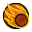
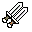
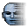
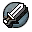
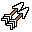
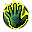
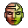
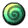

Habilidades
Voluntad
La voluntad es el término para la magia dentro del universo de Fable. No se sabe cómo se crea la voluntad, aunque la mayoría cree que se realiza desde el alma o la mente, mientras que otros piensan que es de un rasgo único y mágico en la sangre.
Fuerza
La Experiencia obtenida puede ser usada para Mejorar el físico, La Dureza y Salud. Para convertirse en un mejor Peleador, para Manejar armas más pesadas, y protegerse de posibles daños. Con cada mejor, se convertirá en alguien más musculoso y potente.
Habilidad
Utilice la experiencia de habilidad para mejorar su velocidad, precisión y astucia. Conviértete en un mejor arquero, un ladrón más astuto, un explorador ágil o un comerciante entusiasta. Con cada avance te volverás más rapido y ágil.
Hechizos de Ataque.
Los hechizos de ataque se utilizan principalmente para infligir daño. Los hechizos de ataque incluyen:
| Relámpago: | Crea un arco de energía pura que salta desde las yemas de los dedos del lanzador hasta el objetivo. Los niveles más altos pueden infligir más daño y golpear a más de un enemigo a la vez. | |
|---|---|---|
|  | Bola de Fuego: | Crea una bola de fuego en la palma de la mano del lanzador, que puede ser lanzada hacia un objetivo cuando se suelta. Los niveles más altos de este hechizo pueden cargar la bola de fuego en una bola más grande y explosiva. |
 |
Inflamar: | Explota el área que rodea al lanzador con una ola de fuego. Los niveles más altos pueden lograr una onda más dañina que cubra un área más grande. |
| Carga: | Impulsa al lanzador hacia adelante a gran velocidad, chocando contra cualquiera que se encuentre en su camino y haciendo estallar a todos los que estén cerca. Los niveles más altos pueden viajar mayores distancias e infligir mayor daño. | |
|  | Ataque Multiple: | Imbuye la espada del usuario con la capacidad de golpear varias veces con un solo golpe. Los niveles más altos permiten más golpes. |
| Furia Divina: | Este hechizo devastador canaliza la furia candente de los dioses en rayos concentrados que impactan dentro de un radio determinado. Los niveles más altos aumentan el daño infligido. | |
| Ira Infernal: | Este formidable y oscuro hechizo invoca vórtices de energía de los reinos inferiores. Un portal se abre debajo de cada víctima, drenando su vida al inframundo. Los niveles más altos aumentan el daño infligido. |
Hechizos Físicos.
Los hechizos físicos afectan principalmente al héroe solamente, al mejorar su fuerza o habilidades. Algunos de estos hechizos solo pueden ser dominados por un héroe malvado o bueno. Los hechizos físicos son:
| Escudo Físico: | Rodea al lanzador con una esfera protectora de energía que absorberá todo el daño a expensas de la voluntad, hasta que al lanzador no le quede voluntad. El escudo se eliminará si se vuelve a lanzar el hechizo. Los niveles más altos permiten la absorción de más daño. (Solo los buenos héroes pueden dominar este hechizo) | |
|---|---|---|
| Berserk: | Envía al lanzador a un frenesí descomunal, aumentando la velocidad y la fuerza, mientras que, por el contrario, disminuye la razón y los modales civilizados. Los niveles más altos permiten que el lanzador se vuelva aún más poderoso y mantenga este estado durante más tiempo. (Solo los héroes malvados pueden dominar este hechizo) | |
|  | Embestida Asesina: | Impulsa al lanzador a través del espacio en un abrir y cerrar de ojos. Si se apunta a una víctima, el hechizo permite al lanzador moverse detrás de ella desafortunadamente instantáneamente. Los niveles más altos impulsan el lanzador aún más lejos. |
| Curar Vida: | Permite al lanzador intercambiar su energía mágica por salud. La salud también se puede transmitir a entidades no hostiles en las cercanías. Los niveles más altos proporcionan más salud con cada uso. (Solo los buenos héroes pueden dominar este hechizo) | |
|  | Espada Fantasmal: | Invoca una espada etérea del inframundo para luchar en nombre del taumaturgo. Múltiples niveles aumentan el poder y el número de espadas invocadas. |
|  | Flechas Mutilples: | Una vez que se lanza este hechizo, cada flecha disparada se transforma mágicamente en una multitud de proyectiles letales, causando un daño mucho mayor. Los niveles más altos generan aún más flechas. |
Hechizos de Area.
Los hechizos de area son hechizos que no afectan al héroe, sino a las cosas que le rodean, como ralentizar el tiempo o convertir a un enemigo en un aliado. Los hechizos de area incluyen:
| Empuje de Fuerza: | Crea una poderosa ráfaga de energía que irradia el taumaturgo, enviando a los enemigos cercanos a los pies desparramados. Útil cuando se supera en número. Los niveles más altos del hechizo crean una fuerza más dañina. | |
|---|---|---|
| Ralentización del tiempo: | Afecta a la propia estructura del tiempo, ralentizando todo lo que rodea al héroe y dejando al lanzador inmune. Los niveles más altos permiten al lanzador mantener este estado durante más tiempo y hacer que el mundo casi se detenga. | |
|  | Invocar | Arranca el alma de una criatura del inframundo para ayudar al taumaturgo. Si esta criatura mata a otra, es reemplazada por el alma de la víctima recién caída. Los niveles más altos permiten al lanzador mantener a la criatura durante más tiempo. (Solo puede ser dominado por buenos héroes) |
|  | Traidor: | Este insidioso hechizo manipula la mente del enemigo mientras el lanzador está lo suficientemente cerca, convirtiendo gradualmente al objetivo en un aliado involuntario. Los niveles más altos permiten el control de la mente de la víctima durante más tiempo. (Solo puede ser dominado por héroes malvados) |
|  | Drenar Vida: | Un hechizo singularmente desagradable, Drenar vida permite al lanzador curarse a sí mismo robando la fuerza vital de sus enemigos. Los niveles más altos drenan más de la víctima con cada uso. (Solo puede ser dominado por héroes malvados) |